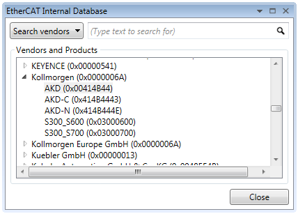
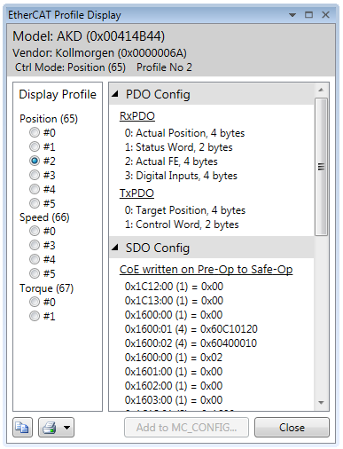

Axis Parameter (MC_CONFIG)
DRIVE_PROFILE AXIS(n) = value
DRIVE_PROFILE allows the selection of different EtherCAT profiles from the internal database to be used with a remote drive over EtherCAT. This MUST be set in MC_CONFIG if the EtherCAT is to be initialised on power up with the required profile.
This axis parameter can be added to the MC_CONFIG.
The EtherCAT drive must have an application specific profile within the Motion Coordinator’s internal database before this function can be used.
For general third-party slave types:
|
value: |
0 : |
Use the default “standard profile” with minimum objects passed between drive and Motion Coordinator. |
|
1 – n : |
Use the application profile numbered. |
For P375 Flexslice 3 axis EtherCAT module:
|
DRIVE_MODE = 1 |
||
|
DRIVE_PROFILE |
Description |
|
|
value |
0 |
Pulse and Direction output. |
|
1 |
Quadrature output. |
|
|
2 |
Square wave and Direction output. |
|
|
3 |
Pulse and Direction output with Z input (registration). |
|
|
4 |
Quadrature output with Z input (registration). |
|
|
5 |
Square wave and Direction output with Z input (registration) |
|
|
DIRVE_MODE = 5 |
||
|
DRIVE_PROFILE |
Description |
|
|
value |
0 |
Incremental encoder with Z input (registration). |
|
1 |
Pulse and Direction counter with Z input (registration). |
|
Set up 4 axes to use application profiles for the cyclic PDO telegram. The EtherCAT axis profiles can be examined with the ETHERCAT($116, vendor_ID) command.
In the Motion Perfect v4 Intelligent Drives, open the Browse Database funtion, select the vendor and then double click the drive model of interest.


The # number is the profile number and the selected profile PDO details are shown on the right.
In MC_CONFIG, put the required profile number for each axis.
DRIVE_PROFILE AXIS(0)=2
DRIVE_PROFILE AXIS(1)=2
DRIVE_PROFILE AXIS(2)=2
DRIVE_PROFILE AXIS(3)=1